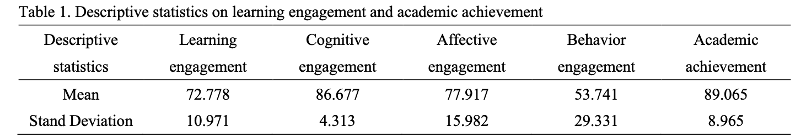
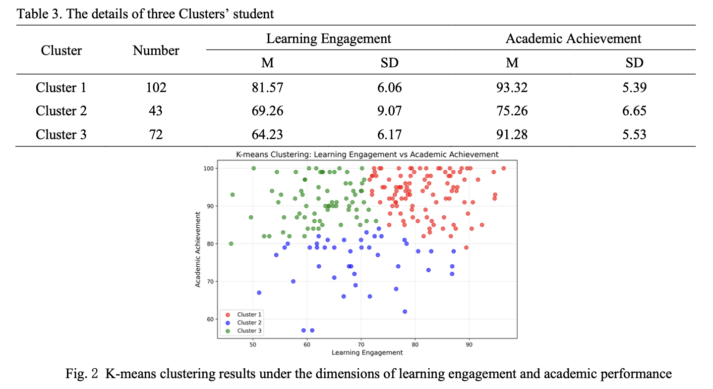
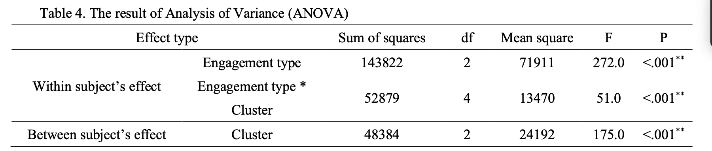
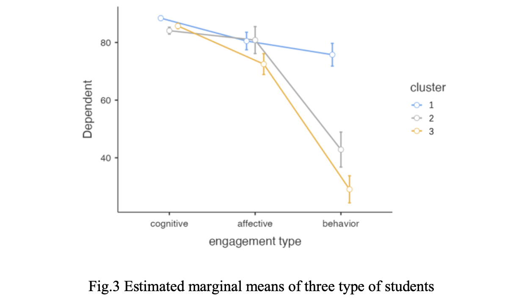
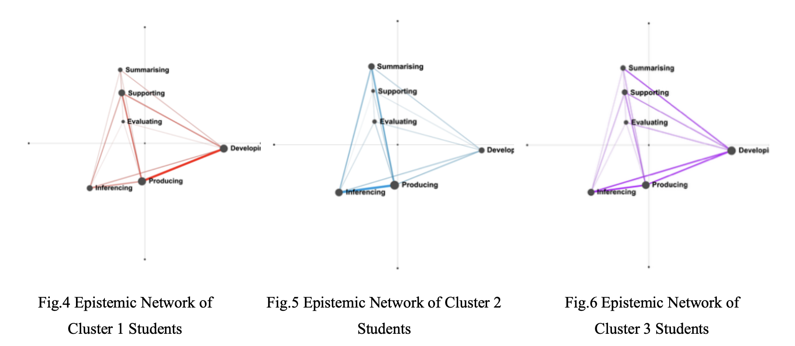

Abstract
This study investigates the complex patterns linking learning engagement to academic achievement in online learning environments. By analyzing data from 217 university students using regression, K-means clustering, ANOVA, and Epistemic Network Analysis (ENA), the research reveals that simple positive correlations obscure distinct student profiles. Cluster analysis identified three groups(high engagement & achievement, low engagement & achievement, low engagement/high achievement), including a notable "low-engagement/high-achievement" profile. Results indicate that behavioral engagement serves as the primary differentiator between high and low academic achievement. Furthermore, ENA findings suggest that low-engagement/high-achievement students compensate for lower behavioral frequency with superior cognitive quality, characterized by integrated knowledge generation, whereas low-performing students rely on superficial referencing. These findings challenge linear engagement–achievement models, demonstrating that academic success depends less on the magnitude of engagement than on the structural quality of cognitive processing and behavioral execution.
Research Focus
While prior research has established a positive correlation between learning engagement and academic achievement, this study goes beyond simple linear associations to uncover the complex, latent patterns linking engagement to performance in online learning environments. It aims to identify distinct student engagement–achievement profiles and investigate the cognitive mechanisms—captured through epistemic network analysis of online discussion comments—that explain why students with similar engagement levels can achieve markedly different academic outcomes.
Methodogy
This study utilized course data from three separate class sessions of the "Educational Technology"
curriculum offered during the 2024 spring semester over 15 weeks at a university in Beijing. The
course was delivered online via a self-developed platform that collected students' assignment scores,
course completion rates, comment content, and operational log data. A total of 217 valid samples
were obtained (149 females, 68 males) from diverse majors including law, chemistry, mathematics,
education, and literature.

Learning engagement was measured across three dimensions based on Martin's (2022) framework:
cognitive engagement was assessed through participation scores (content completion, chapter
quizzes, and attendance); affective engagement was measured using the Online Self-regulated
Learning Questionnaire (OSLQ, Cronbach's α = 0.90); and behavioral engagement was
captured through platform interaction logs across five indicators—page views, key-point clicks,
comments, AI utilization, and pause frequency. Academic achievement was measured by end-of-semester
exam scores.
The analytical procedure consisted of three stages: (1) linear regression to assess the predictive
validity of overall engagement on achievement; (2) K-means clustering (K=3) to identify latent
engagement–achievement profiles; and (3) mixed-design ANOVA to decompose the effects of the three
engagement dimensions across clusters. To characterize cognitive features, all student comments
were encoded using Biasutti's (2017) asynchronous online discussion coding framework across seven
dimensions (inferencing, producing, developing, evaluating, summarizing, organizing, and supporting),
with a Cohen's kappa of 0.91. Epistemic Network Analysis (ENA) was then conducted to model and
visualize the cognitive networks of different student profiles.
Key Finding
Weak Predictive Power of Aggregate Engagement:
Although overall learning engagement significantly predicted academic achievement (β = 0.179,
p = 0.001), the explanatory power was very limited (R² = 0.048). In the multiple regression,
only cognitive engagement emerged as a significant predictor (R² = 0.120), indicating that
simple linear models fail to capture the complexity of student dynamics.

Three Distinct Student Profiles: K-means clustering identified three groups: high engagement/high achievement (Cluster 1, n = 102), low engagement/low achievement (Cluster 2, n = 43), and low engagement/high achievement (Cluster 3, n = 72). The existence of Cluster 3 challenges the assumption that higher engagement is always necessary for strong academic performance.

Behavioral Engagement as the Key Differentiator: ANOVA revealed a significant interaction between engagement dimensions and cluster membership (F = 51.0, p < .001). Cognitive engagement was consistently high across all three groups. In contrast, behavioral engagement showed a precipitous divergence—Cluster 1 maintained elevated levels, while Clusters 2 and 3 experienced sharp declines—indicating that behavioral participation is the primary factor distinguishing high from low achievers.


Cognitive Quality Over Quantity: ENA revealed that high-engagement/high-achievement students concentrated on knowledge generation (producing), cognitive deepening (developing), and community support (supporting). Low-engagement/ low-achievement students remained fixated on mechanical referencing (inferencing) and summarization (summarizing). Most notably, low-engagement/high-achievement students exhibited dense, interconnected cognitive networks characterized by integrated knowledge generation—compensating for lower behavioral frequency with superior cognitive quality and learning efficiency.

Discussion & Conclusion
This study refines the correlational patterns between learning engagement and academic achievement,
the findings demonstrate that academic success depends less on the magnitude of engagement than on the structural quality of cognitive processing and behavioral
execution. The identification of a "low-engagement/high-achievement" profile is particularly significant:
these students do not necessarily engage less with course content; rather, their engagement is more
efficient, characterized by deeper cognitive integration rather than superficial participation.
Practically, these findings offer actionable insights for online instruction. Educators are advised to
encourage students to actively utilize online platforms to bolster behavioral engagement, and to design
discussion activities that foster comments with greater cognitive depth and breadth rather than mere
frequency.